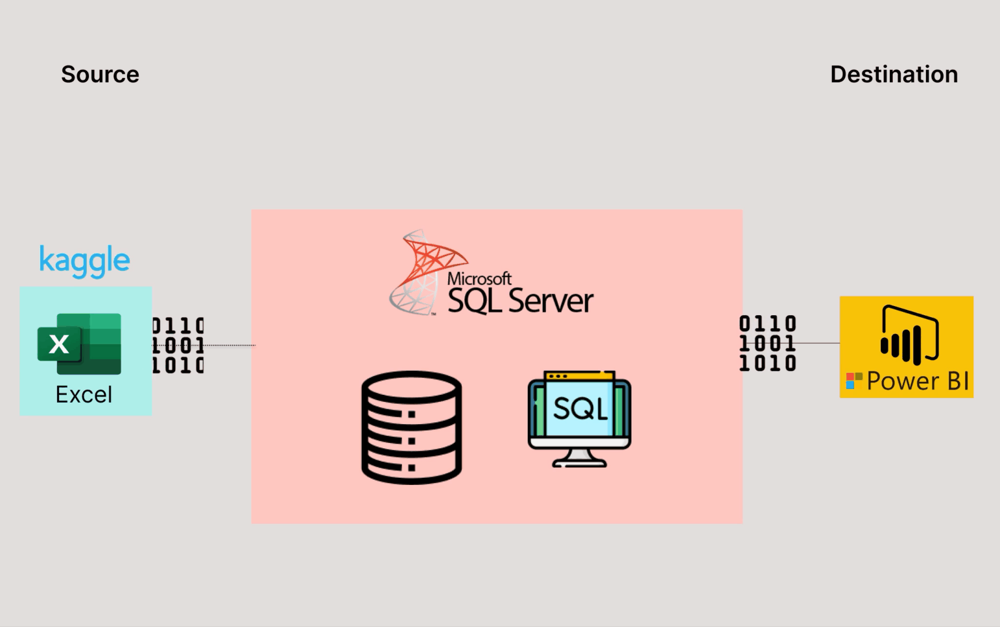
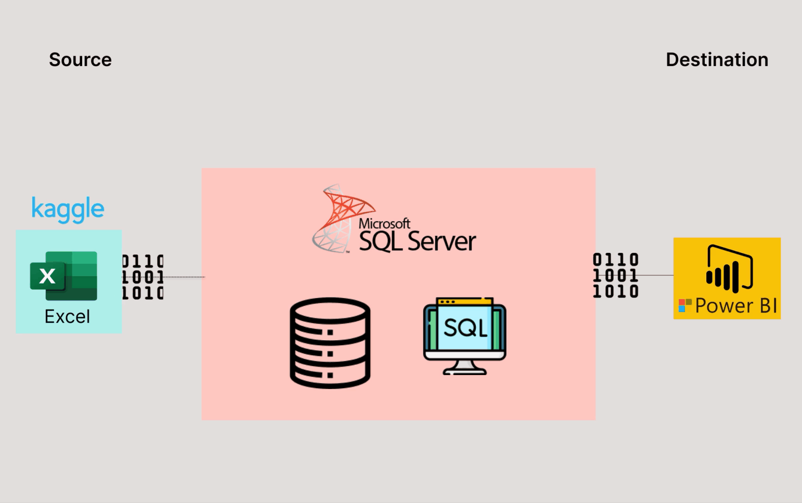
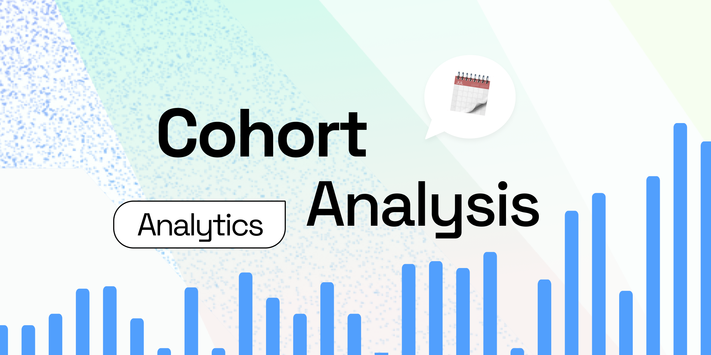
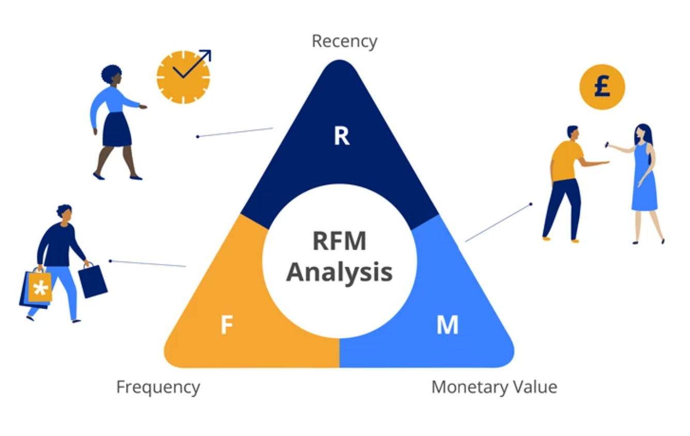

Dynamic and results-driven Data Analyst, adept at employing SQL, Power BI, , and Python to derive meaningful insights from data. My progressive mindset, enthusiasm, and strong eagerness to learn further enhance my ability to contribute effectively to data analysis projects.
 

The objective of this analysis is to identify the most suitable YouTubers for running marketing campaigns for the rest of the year.

In this Excel project, I investigate a data set from a telecommunications company and analyze their churn rate..

The Nashville Housing project is about cleaning a real estate dataset for Nashville market by standardizing data formats, removing duplicates, and improving data completeness.

This project uses both SQL, Power BI and Python respectively to analyze customer retention rate.

The project uses Python to analyze and evaluate customer value and customer segments, sentiment analysis using NumPy, Pandas, Matplotlib libraries.